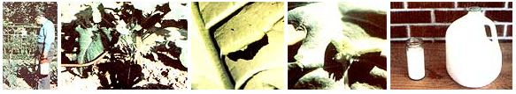

FROM LEFT TO RIGHT: The author attacks some broccoli-hungry loopers. . . . It's necessary to apply the spray to the underside of the leaves where the pests are feeding. . . . This is how a healthy looper looks . . . . This one, showing the effects of the pesticide, can be used to brew a new batch of Bacillus thuringiensis. . . . One pint of the milk mixture will yield one gallon of spray solution.